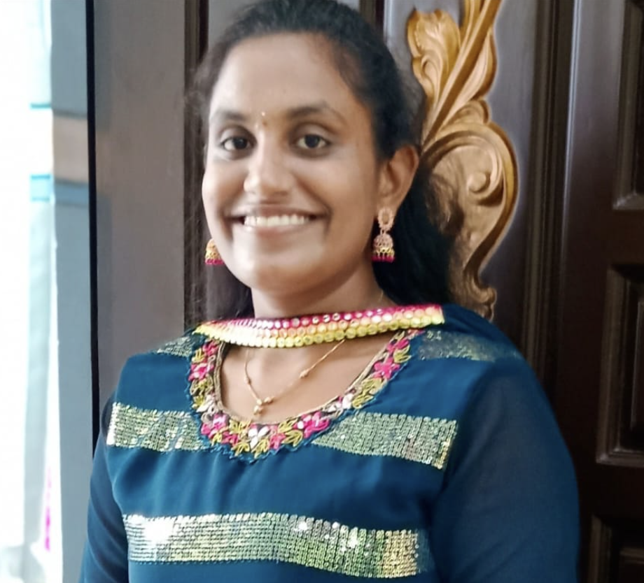
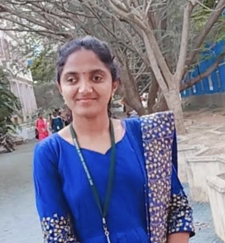

STANDUPis one of the
best platform to learn web development,here we can learn huge content within a
less amount of time and the mentor is also good he is clearing the doubts very well. Finally we will
definitely upgrade ourselves by join the STANDUP.
Durga prasad
Student
STANDUP helped me a lot in learning web
development. All the concepts were clearly explained and
covered.The mentor support is also good and cleared all the doubts at any time.It helped me a lot
in learning and creating web application from the scratch. Finally,I improved
myself.Thank you so
much STANDUPüòä
Aishwarya priya
Student
My experience at was really good. They had well-structured programs that
helped me increase my
knowledge through sessions and assignments.we were in a continuous phase of preparation. mentor
also
helped us prepare for interviews. Start from no knowledge about web development to
creating a own
frontend project this is how it goes. Even solving doubt for each and every single person.
Sushma sree
Student
STANDUP is at the forefront of a student
career upgradation. With fullstack technology as bootcamps,
trainings they aim to reshape the life of students. This STANDUPis finding problems faced by students
and innovating a new and simple way to climb up their goals.As they navigate the
challenges and
opportunities in STANDUP and solving and
grabbing the challenges and opportunities to full fill their
dreams♥️.
Uday kiran
Student
I was incredibly grateful for the opportunity to have taken this course on HTML, CSS, and Bootstrap.
It has equipped me with the necessary skills and knowledge to create well-designed and responsive
websites. Your expertise as an instructor and the quality of the course
exceeded my expectations,
and I am confident that the skills I have acquired will prove me as a web developer in future.
Thank
you for providing such a valuable and enriching learning experience.
Rohith mera
Student
STANDUP is one of the best platform where students can learn best coding languages within
less time.. mentor Prasanth sir very kind and best teacher to clear all our doubts and
teach us very
patiently..thank you sir
Divya sree
Student
The STANDUP has been an exceptional journey
that exceeded my
expectations. The STANDUP has well structured curriculum, dedicated instructors, and hands-on approach
have truly transformed my skills and understanding of front end development . The btc emphasis on
industry relevant technologies and collaborative learning environment
provided me with the
confidence and expertise to tackle real world projects.
Bhavana
Student
STANDUP..is a good platform to learn web
development .Here,the mentor will explain things to you
clearly and in an easy way that you can understand.Besides,he clears every doubt for you in a good
way.It is best platform for beginners to develop web pages and more. with good
mentorship
Poojitha
Student
Good Environment üòé , Mr.PRASANTH REDDY sir is a very knowledgeable person.Quality of coaching is
incredible, way of explaing each and every topic scratch to ending is Excellent as per
the students
understanding he explained in a easy way to get more knowledge explain with more on practical
knowledge and hands on projects with hackathons. The environment between
teacher & student is very friendly,with 24x7 mentor support.
CM Nikhil kumar
Student
STANDUP is one of the best platform with less charges. Good mentor skills but little more to learn. And
we finally upgraded ourselves.
krishna Vamsi
Student
STANDUP is best platform for learn web development, here we can learn about how to create web page in
different ways with huge content within a less amount of time and less fee.we got good mentor to
teach web development and clearing all the doubts and his teaching skills also very good. Finally we
will definitely upgrade ourselves by joining STANDUP
KrupaSagar
Student
STANDUP is a best place to learn about web developement .....
Before joining the btc just I know what is what about html,css, bootstrap........but at the end of
this btc classes I know well about web development
& Finally thank you so much for giving this knowledge to me......
Suneetha
Student
STANDUP is one of the best platform for learning the coding. We can learn a lot of content
within less time and with less amount.Really I was shocked at STANDUP in providing a lot of content with
less amount.I think no coding platform provides such a great content with less amount,good mentor.we
have good mentor and he solves our doubts in a friendly manner at any time with patience.Finally we
upgraded all the content.I will suggest my friends to join in STANDUP
THANK YOU STANDUP!!!ü§ù
Sai Sree
Student
I think STANDUP is an basement for my coding career why because I doesn't have any basic knowledge about
coding ,so l learned something from this .thanks bro for all this
Poorna Chandra
Student
STANDUP is one the best platform to learn the web development course.here my mentor is also very good in
clearing my doubts at any time ,aslo we learn this in little amt of time , finally we definitely
upgrade ours selfs and we had a lots of self satisfaction on joined in "STANDUP".
Tanmaie
Student
STANDUP is one of the best platform to learn web development course,in STANDUP we can learn huge content
with in a less amount of time and our mentor is also super good ,he has so much of patience &he was
clearing the doubts very well at any time,finally we will definitely upgrade ourself by joining the
BTC. THANK YOU SO MUCH PRASANTH
Priya Reddy
Student
After joining front end web development course in STANDUP,my confidence was boosted.Now i
can design front end of any website more resposively.it was a great experience learning concepts
with funny examples which made it to learn easily.
Vamsi Krishna
Student
## STANDUP ##
This is an best platform to learn and gain an lack of knowledge...By this we can develop ur skills
and we can boost up our resume weightage.....
Thank You sir...
At last ,the main thing is u have provide recordings also for that i am so happy about it sir...
kadakanchi Keerthana
Student
STANDUP is the best platform to learn the full stack.Here we learned a lot of things which is useful to
our future.And here my coacher support and explanation was excellent...Thank you for giving this kind
of opportunity.
Prathyusha
Student
STANDUP is one of the best platform to learn web development. Here I learn huge content within short
time.the mentor is also good he is clearing the doubts very well.
Babu Reddy
Student
STANDUP is a very good platform to learn about web development and also at any time the mentor clarify
the doubts, very useful sessions are available
Pathan Reshma
Student
STANDUP is very useful to me in my future
Thanks for giving such a excellent sessions to me
Vani
Student
STANDUP is one the best platform to learn the web development course.here my mentor is also very good in
clearing my doubts at any time ,aslo we learn this in little amt of time , finally we definitely
upgrade ours selfs and we had a lots of self satisfaction on joined in "STANDUP".
Lakshman
Student
Taking course inside Btc is really one of my education career turning point,The sessions felt very
useful
Divya Murugan
Student
I have gained so much of knowledge from STANDUP and It is wonderful experience by doing hands on
projects.
Thank you for such a great opportunity
Shaik Umar Abid
Student
STANDUP is a good platform to learn about the front end courses like html,css, bootstrap etc. , Doubt
solving, asking questions, and giving answers are a good way to get interest to listen the
classes.Thank you for your teaching
Saranya
Student
From this platform I have gained so much of knowledge and it was very useful,intially im facing lot
of struggles to design good things using front end but this STANDUP course helped me alot ,thank you so
much STANDUP.
Kokulla Sushma sree
Student
STANDUP is the best platform to learn new technologies are running right now.This is very helpful &
useful to gain the knowledge from the beginning step onwards without knowing any previous knowledge
about particular technology which we selected... I'm very grateful as i have joined the btc... Thank
you..
Sathya Sai Keerthana
Student
In these 30 days I learn so many new things from scratch knowledge we have to join this course now
we are doing own projects creating websites it's awesome experience with STANDUP thank u prashanth for
teaching all skills thanks for u r patience really we are very grateful to you to teach new skills
for us. I love your dedication enthusiasm in STANDUP. It's wonderful journey with STANDUP thank
you❤️❤️
Mamatha
Student
(STANDUP) is the only one platform where we will spend less money and we grab more
knowledge .. it's just like LOW COST MORE GAIN... Coming to mentor....he is such a fantastic person
...he will explain clearly and neatly....no matter what the time is....24x7 he will stay for us..and
will keep all his efforts to clarify our doubts .....
Finally STANDUP is the best platform to learn web development...
Thank you so much Prashant for ur beautiful sessions....
Sushma
Student
Yea, STANDUP is a place where we can learn front end developing in a perfect manner.
And also, it's the correct way.
The guide will help us 24x7.
And in this , we will have live sessions , recordings, assignments, hackathons ,and also building
projects.
STANDUP is the Perfect way for becoming as a front end developer.
Sameena
Student
Thank you so much prasanth and thanks to STANDUP.I got more knowledge on web development.It just because
of STANDUP.
Hemalatha
Student

From this platform I gained so much of knowledge and it is very useful for my future. At first I
don't even know about coding but after joining STANDUP I came to know.So STANDUP is one of the best platform
to start .
Vaarshika
Student
STANDUP is the wonderful platform to reach our goals.The mentor is teaching absolutely great and he was
clarifying our doubts within the session itself. The STANDUP provides recording classes.
Bhargavi
Student

STANDUP IS THE ONE OF THE BASIC STEP AND GOOD PLATFORM BEFORE I HAVE EVER SEEN ... AND OUR MENTOR ALSO
TOO GOOD IN TEACHING AND CLARIFYING THE DOUBTS ... .BY THIS COURSE ( FULL STACK DEVELOPMENT ) WE HAD
LEARNED A LOT OF THINGS RIGHT NOW . AT LAST WE ARE SO HAPPY TO HAVE SUCH A MOST VALUABLE(
OPPORTUNITY) PLATFORM FOR US ...
Meghana
Student
STANDUP help me a lot in learning web development.All the concepts were clearly explained and covered.It
help me a lot in learning and creating web application from the scratch.Finally i improve my skills
after attending the classes.Thank you STANDUP ü§ù